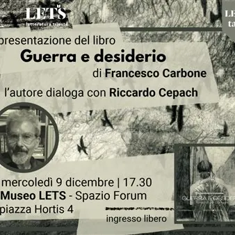

mer 9 dic · dalle 17:30
"Guerra e desiderio": Francesco Carbone presenta il suo nuovo romanzo per 111 figure
Un romanzo in cui parole e immagini si intrecciano per raccontare la guerra, il desiderio e la fragilità dei destini individuali nel tempo della Storia. È Guerra e desiderio(Mincione Edizioni, 2026), il nuovo libro dello scrittore, disegnatore e incisore Francesco Carbone…
 Indicazioni
Indicazioni
- Costi e prenotazioni
- Costo non indicato · Prenotazione non indicata
- Programma
- Programma da verificare. Apri la fonte ufficiale per orari e possibili aggiornamenti.
- In caso di maltempo
- Nessuna indicazione specifica pubblicata.
- Note
- Acquisito automaticamente dalla fonte.
L’EVENTO
Descrizione completa
Un romanzo in cui parole e immagini si intrecciano per raccontare la guerra, il desiderio e la fragilità dei destini individuali nel tempo della Storia. È Guerra e desiderio (Mincione Edizioni, 2026), il nuovo libro dello scrittore, disegnatore e incisore Francesco Carbone , protagonista del prossimo appuntamento della rassegna LETStalk, in programma mercoledì 9 dicembre, alle ore 17.30, nello Spazio Forum del Museo LETS – Letteratura Trieste, in piazza Hortis 4. L’autore presenterà il volume dialogando con il responsabile del Museo, Riccardo Cepach . Ambientato sullo sfondo della caduta dell’Impero napoleonico, Guerra e desiderio racconta una stagione di dissoluzione politica e morale attraverso le vicende di tre personaggi: Anselmo, capitano segnato da una profonda cicatrice, testimonianza delle battaglie combattute e delle ferite interiori, Sylvie, la misteriosa donna amata, e Audran, un giovane tenente condannato. Le loro esistenze si incontrano e si intrecciano in un mondo in cui il crollo di un ordine storico si accompagna allo smarrimento delle certezze individuali. Costruito attraverso frammenti di diario, lettere e riflessioni poetiche, il romanzo si sviluppa in 111 figure realizzate dallo stesso autore . Il linguaggio visivo diventa parte integrante dell’esperienza di lettura, accompagnando il lettore in una dimensione sospesa tra realtà e immaginazione, sublime e grottesco. Al centro dell’opera si collocano interrogativi che attraversano il tempo e la condizione umana: il rapporto tra desiderio e destino, la memoria individuale e collettiva, la violenza della guerra e la possibilità dell’amore in un mondo attraversato dalla perdita. Francesco Carbone , scrittore, disegnatore e incisore, vive a Trieste. Ha fatto parte della redazione di Pickwick e ha fondato la rivista di letteratura e arte Il compagno segreto . Tra le sue pubblicazioni figurano Da Hitler a Casablanca via Hollywood. Cineasti ebrei in fuga dal nazismo (2011), I privilegi dell’ignoranza (2013) e Chiari pensieri d’amore (2017). Alla sua attività letteraria affianca una ricerca nel disegno e nell’incisione, testimoniata anche da Pictura Dantis (2021) e Innocenze (2023), realizzati per la Società Dante Alighieri, e dalle illustrazioni per opere del poeta Claudio Grisancich. Ingresso libero fino a esaurimento dei posti disponibili.
IL PROGRAMMA
Programma e orari
Appuntamenti raccolti dalle fonti elencate. Dove manca un orario, non è ancora disponibile in questa scheda.
Programma pubblicato
- Dal 2026-12-09 al 2026-12-09
INFORMAZIONI UTILI
Prima di partire
- Controllare la fonte prima di partire.
ORGANIZZAZIONE